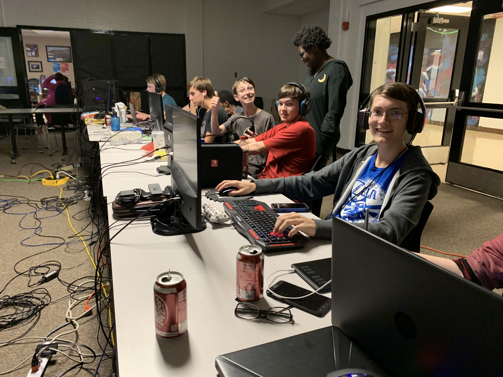

FCHS Computer Science Academy
Girls Who Code
Girls Who Code is an organization that encourages young women of all kinds to take on the challenge of programming. While students don't necessarily have to be in the Computer Science Academy in order to join Girls Who Code, it will significantly help them in keeping up and practicing. If a member of GWC is not in the CS Academy, they will have to be willing to put in extra work at home in order to code alongside their peers, so it is heavily encouraged that they join both. GWC gets together every Thursday and Friday from 2:30-4:00 p.m., brainstorming and executing new ideas and methods of programming.
Cybersecurity Club

Cybersecurity is a mulit-disciplined fields of computer science and technology that is concerned with the security, vulnerability, and nature of both digital and human systems. The Fern Creek Cybersecurity Club will comprise students who are interested in the highly technical, tedious, but satisfying work of this disipline.
- They form teams to compete in Capture the Flag competitions like picoCTF
- They conduct internal CTFs or competitions on sites such as OverTheWire
- They develop a deeper understanding of cyber systems, particularly computer networks and Linux
LAN Parties

Come one! Come all! To the event of the season; Our computer science academy's LAN party! An opportunity for students to relax, kick back, and play some video games all night long. Or non-video games, whatever suits your tastes. Students are invited from 7pm to 7am, on a Friday night, chaperoned by faculty of Fern Creek, to enjoy some good food and laughs with fellow computer science students. Just make sure to turn in your permission slip and fee of a mere 15 dollars!